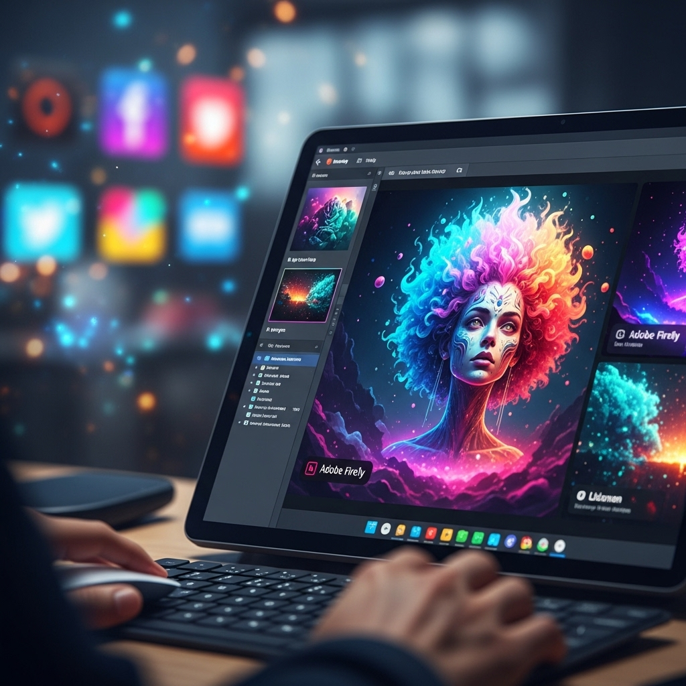
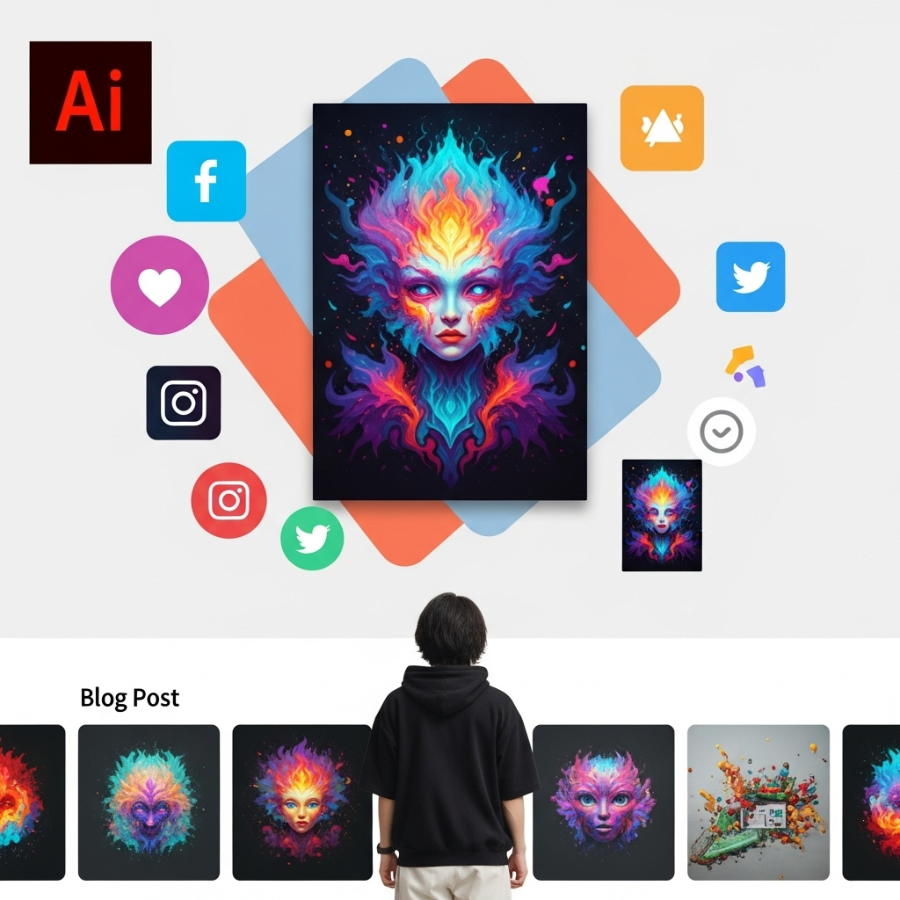
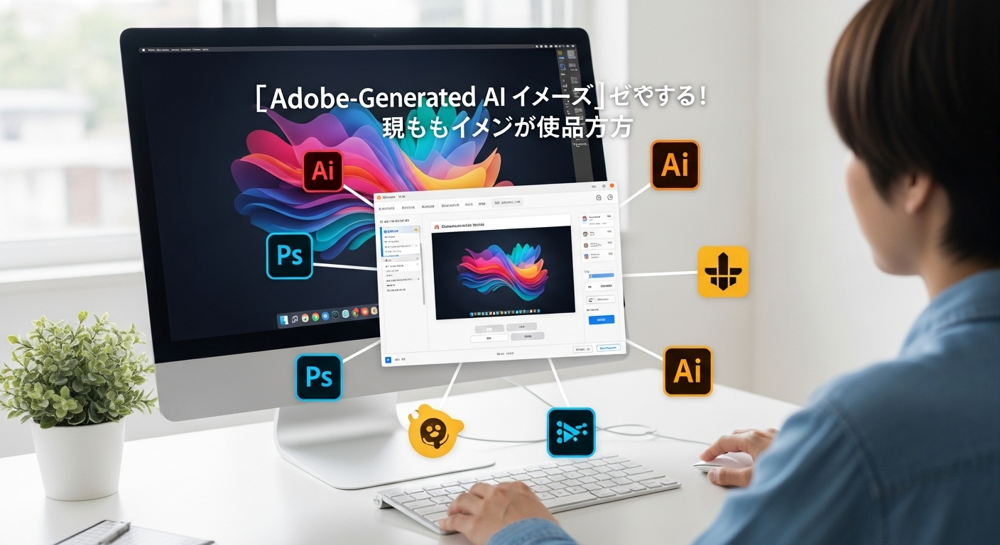

【Adobe生成AI画像】初心者でも簡単！SNS・ブログで目を引く画像作成術
導入
デジタルコンテンツが溢れる現代において、SNSやブログで人々の目を惹きつけ、心に残る印象を与えるためには、魅力的なビジュアルが不可欠です。しかし、「デザインスキルがない」「プロのデザイナーに依頼する予算がない」「画像作成に時間がかかりすぎる」といった悩みを抱えている方も少なくないのではないでしょうか。特に、日々の情報発信が求められるSNSやブログ運営では、高品質な画像を継続的に用意することは大きな課題となりがちです。
もしかしたら、あなたはこれまで、フリー素材サイトでイメージにぴったりの画像を探し回ったり、複雑な画像編集ソフトの使い方を習得しようと奮闘したりしてきたかもしれません。時間をかけても理想の画像が見つからず、結局はありきたりな画像で済ませてしまったり、あるいは画像作成そのものを諦めてしまったりした経験もあるかもしれませんね。
しかし、もうご安心ください。現代のテクノロジーは、私たちの想像力をはるかに超える可能性を秘めています。その最たるものが、「生成AI」の進化です。中でも、Adobeが提供する生成AI「Adobe Firefly」は、その画期的な機能と、クリエイティブ業界における信頼性から、今、世界中で大きな注目を集めています。
Adobe Fireflyを使えば、まるで魔法のように、あなたの頭の中にあるイメージを、テキストで指示するだけで瞬時に美しい画像として具現化できます。専門的なデザインスキルは一切不要。数クリック、数文字の入力だけで、プロが手がけたかのような高品質な画像を、あなたの手で生み出すことができるのです。
この画期的なツールは、SNSやブログ運営に携わるすべての方にとって、まさにゲームチェンジャーとなるでしょう。読者の目を釘付けにするアイキャッチ画像、記事の内容を豊かにする挿絵、さらには広告バナーやWebサイトの素材まで、あなたのクリエイティブな表現の幅を無限に広げてくれます。
この記事では、Adobe Fireflyの基本的な機能から、その活用メリット、利用上の注意点、そして具体的な画像作成方法やSNS・ブログでの活用事例まで、初心者の方でも安心して取り組めるよう、優しく丁寧に解説していきます。Adobe生成AI画像をあなたの強力な味方につけて、あなたの情報発信を次のレベルへと引き上げましょう。さあ、一緒に新しいクリエイティブの世界への扉を開いていきましょう。
Adobe Fireflyとは？生成AI画像で広がる可能性
デジタルクリエイティブの世界に革命をもたらしつつある「生成AI」。その中でも、特にクリエイターやビジネスパーソンから熱い視線を浴びているのが、Adobeが提供する「Adobe Firefly」です。Adobe Fireflyは、単なる画像生成ツールにとどまらず、クリエイティブプロセス全体を革新する可能性を秘めた、総合的な生成AIモデル群です。
私たちがこれまで抱えていた「画像作成の壁」を打ち破り、誰もがクリエイティブな表現を享受できる未来を提示するAdobe Firefly。一体どのようなツールなのでしょうか。その基本から、なぜこれほどまでに注目されているのか、その理由を深く掘り下げていきましょう。
Fireflyの基本機能と特徴
Adobe Fireflyは、Adobeが長年にわたり培ってきたクリエイティブツールの知見と、最先端のAI技術が融合した結果として誕生しました。その最大の特徴は、ユーザーが直感的に、そして安心して利用できる点にあります。
Fireflyは、複数の生成AIモデルの集合体であり、その中にはテキストから画像を生成する機能や、既存の画像を編集・拡張する機能などが含まれています。これらの機能は、Adobe Creative Cloud製品群とのシームレスな連携も視野に入れられており、クリエイティブワークフロー全体を効率化し、新たな表現の可能性を切り開くことを目指しています。
Adobe Fireflyの根底にあるのは、「クリエイターを支援し、創造性を解き放つ」というAdobeの揺るぎない哲学です。AIが人間の仕事を奪うのではなく、AIが人間の創造性を増幅させる、そんな未来のクリエイティブの形を提案しているのです。
基本機能１．テキストから画像を生成（Text to Image）
Adobe Fireflyの最も象徴的で、多くのユーザーがまず体験する機能が「テキストから画像を生成（Text to Image）」です。この機能は、あなたが頭の中で思い描いているイメージを、言葉（プロンプト）で入力するだけで、瞬時にビジュアルとして具現化してくれる魔法のようなツールです。
例えば、「満開の桜並木の下を散歩する猫、日本庭園、水彩画風、夕焼け」といった具体的なテキストを入力するだけで、AIがその言葉を解釈し、一枚の美しい画像を生成します。このプロセスは、まるで画家があなたの言葉を聞きながら絵を描いてくれるかのようです。
この機能の素晴らしい点は、専門的な絵画のスキルや写真撮影の知識がなくても、誰でも簡単に、高品質でユニークな画像を生成できることです。生成される画像のスタイルも多様で、写真のようにリアルなものから、イラスト、油絵、水彩画、CG風など、様々なアートスタイルを選択したり、プロンプトで指示したりすることが可能です。
SNSの投稿に目を引くアイキャッチが欲しいとき、ブログ記事のテーマにぴったりの挿絵を探しているとき、あるいは単に自分のアイデアを視覚化したいときなど、Text to Image機能はあなたのクリエイティブな表現を力強くサポートしてくれるでしょう。従来のストックフォトサービスでは見つからなかったような、本当に「あなただけの」オリジナル画像を、あっという間に手に入れることができるのです。
基本機能２．画像の一部を編集・拡張（Generative Fill/Generative Expand）
Adobe Fireflyのもう一つの強力な機能が、「Generative Fill（生成塗りつぶし）」と「Generative Expand（生成拡張）」です。これらの機能は、既存の画像をAIの力でスマートに編集・拡張することを可能にし、クリエイティブな表現の自由度を格段に高めます。
Generative Fill（生成塗りつぶし）は、画像内の不要なオブジェクトを自然に除去したり、逆に空いているスペースに新しい要素を追加したりする機能です。例えば、写真の背景に写り込んでしまった通行人を消したい場合や、商品写真の背景をより魅力的なものに変えたい場合などに威力を発揮します。
使い方は非常にシンプルです。Photoshopなどの対応アプリケーションで、編集したい範囲を選択し、テキストで「ここに花を」「背景を森に」といった指示を入力するだけ。AIが選択範囲の周囲のピクセルを分析し、違和感なく自然に画像を補完したり、新しい要素を生成して追加したりします。まるで、写真に写ったものを消しゴムで消し、その後に絵の具で描き足すような感覚ですが、その精度と自然さは驚くべきものです。これにより、画像の修正や加工にかかる時間を大幅に短縮し、より高度なビジュアル表現を可能にします。
Generative Expand（生成拡張）は、画像のキャンバスサイズを拡張し、その空白部分をAIが自動で生成・補完する機能です。例えば、縦長の写真をSNSの横長投稿に合わせて使いたいけれど、トリミングすると重要な部分が欠けてしまう、といった場合に非常に便利です。
画像を拡大したい方向にキャンバスを広げると、AIが既存の画像のスタイルや内容を分析し、自然な形で空白部分を埋めてくれます。空の続き、風景の広がり、テーブルの上の小物など、まるで最初からそのように撮影されたかのような、違和感のない拡張が可能です。これにより、画像の構図を後から調整したり、SNSの様々なフォーマットに合わせて柔軟に画像を適応させたりすることが可能になります。
これらの機能は、単なるレタッチツールを超え、あなたのアイデアをより自由に、そして迅速に具現化するための強力なパートナーとなるでしょう。写真のトリミングや合成、背景の変更といった手間のかかる作業が、AIの力で劇的に簡単になり、クリエイティブな試行錯誤の時間を増やすことができます。
なぜAdobe Fireflyが注目されるのか？
Adobe Fireflyが単なる流行りのAIツールとしてではなく、クリエイティブ業界の未来を担う存在として注目されているのには、明確な理由があります。それは、Adobeが長年にわたりクリエイターと向き合い、彼らのニーズを深く理解してきたからこそ実現できた、独自の価値提供があるからです。
生成AIの技術自体は日々進化し、多くの企業が様々なツールをリリースしています。しかし、その中でもAdobe Fireflyが際立っているのは、クリエイターの視点に立った設計思想と、倫理的・法的な側面への深い配慮がなされている点にあります。単に「画像を生成する」だけでなく、「安心して、そして創造的に利用できる」という点が、他の生成AIツールとの大きな差別化要因となっています。
次に、この注目すべき理由をさらに掘り下げて見ていきましょう。
注目点１．クリエイター向けに特化された生成AI
Adobe Fireflyの最大の注目点の一つは、その開発が「クリエイター向け」に強く特化されていることです。これは、AdobeがPhotoshopやIllustratorといったプロフェッショナル向けツールを長年提供してきた経験と、クリエイターコミュニティとの強固な関係性から生まれています。
具体的には、Fireflyは以下のような点でクリエイターのニーズに応える設計がされています。
- 直感的な操作性： Adobe製品に慣れ親しんだユーザーであれば、Fireflyのインターフェースも非常に直感的に感じられるでしょう。プロンプト入力だけでなく、様々なスタイルや設定オプションが視覚的に分かりやすく配置されており、試行錯誤しながら理想の画像に近づけることができます。これは、複雑なコマンドライン操作が必要な他のAIツールとは一線を画します。
- Adobe Creative Cloudとのシームレスな連携： Fireflyは、Photoshop、Illustrator、Adobe Expressなどの既存のCreative Cloudアプリケーションと深く連携することを前提に開発されています。これにより、Fireflyで生成した画像をすぐにPhotoshopで開き、さらに高度な編集を加えたり、Illustratorでベクター化したりといった、一貫したワークフローを構築できます。これは、クリエイターが普段使い慣れているツールの中でAIの力を活用できるという点で、非常に大きなメリットです。AI生成と手動編集の垣根をなくし、クリエイティブな表現の可能性を無限に広げます。
- 多様な表現スタイルへの対応： Fireflyは、単にリアルな画像を生成するだけでなく、イラスト、絵画、グラフィックデザインなど、多種多様なアートスタイルに対応しています。これにより、クリエイターは自分のプロジェクトの要件に合わせて、幅広い表現の中から最適なビジュアルを選択・生成することができます。また、色の調整、照明、構図といった細かな設定も可能で、より具体的なイメージをAIに伝えることができます。
- 創造性を刺激する機能： Fireflyは、単に指示通りに画像を生成するだけでなく、クリエイターが新たなアイデアを発見したり、試行錯誤を繰り返したりするプロセスを支援します。例えば、生成された複数の候補の中からインスピレーションを得たり、既存の画像に新しい要素を加えて実験したりすることで、予期せぬクリエイティブな発見が生まれることもあります。これは、AIがクリエイターの「ひらめき」をサポートする役割を果たすことを意味します。
このように、Adobe Fireflyは、単なる技術的な進歩にとどまらず、クリエイターがより自由に、より効率的に、そしてより高品質な作品を生み出すための強力なパートナーとして設計されています。クリエイターの創造性を解き放ち、デジタルコンテンツ制作の未来を形作る、まさにその最前線にいるツールと言えるでしょう。
注目点２．商用利用への配慮と安全性の追求
生成AIの登場は、クリエイティブな可能性を広げる一方で、著作権や倫理、安全性といった重要な課題も提起しました。特に、商用利用を考える企業やクリエイターにとって、生成された画像の著作権がどうなるのか、どのようなデータで学習されているのか、といった点は非常に懸念される部分です。
Adobe Fireflyが他の生成AIツールと一線を画し、大きな注目を集めているもう一つの理由が、この「商用利用への配慮と安全性の追求」にあります。Adobeは、この課題に対して非常に真摯な姿勢で取り組んでおり、ユーザーが安心してクリエイティブ活動を行える環境を提供しようとしています。
- 学習データの透明性と倫理的な配慮：
Adobe Fireflyの学習データは、主にAdobe Stockのコンテンツ、オープンライセンスコンテンツ、そして著作権が切れているパブリックドメインコンテンツから構成されています。これは、著作権侵害の可能性が指摘されることが多い、インターネット上のあらゆる画像を無差別に学習している他の生成AIとは大きく異なります。
Adobeは、学習データの透明性を確保することで、生成される画像の著作権リスクを最小限に抑えようと努めています。クリエイターが安心してFireflyを利用し、その生成物を商用目的で使用できるような基盤を築いているのです。
また、Adobeはコンテンツクレデンシャル（Content Credentials）という技術を導入し、AIによって生成された画像には、その生成元や編集履歴などの情報が埋め込まれるようにしています。これにより、AIが生成したコンテンツと人間が作成したコンテンツを区別しやすくし、デジタルコンテンツの信頼性と透明性を高めることを目指しています。 - 商用利用可能なモデルの提供：
Adobe Fireflyは、商用利用を前提としたモデルとして開発・提供されています。これは、ビジネスで画像を使用する際に、著作権侵害のリスクを気にすることなく、安心してFireflyの生成画像を活用できることを意味します。例えば、SNS広告、Webサイトの素材、ブログの挿絵、プレゼンテーション資料など、多岐にわたる用途で利用することが可能です。
もちろん、利用規約やガイドラインは常に確認する必要がありますが、Adobeが公式に商用利用をサポートしているという点は、他の多くの生成AIサービスにはない大きな強みであり、企業やプロフェッショナルなクリエイターにとって非常に魅力的なポイントです。 - 有害コンテンツのフィルタリングと安全性：
Adobeは、Fireflyが生成するコンテンツが、不適切であったり、差別的であったり、あるいは有害であったりしないよう、強力なフィルタリングメカニズムを導入しています。AIが学習するデータセットのキュレーションから、生成されるコンテンツの監視まで、多層的なアプローチで安全性を確保しようと努めています。
これにより、ユーザーは意図しない不適切な画像が生成されるリスクを低減し、安心してクリエイティブな作業に集中できます。特に、公共の場で公開される可能性のあるSNSやブログのコンテンツにおいては、このような安全性の確保は極めて重要です。
Adobe Fireflyは、単に最先端の技術を提供するだけでなく、その技術が社会に与える影響を深く考慮し、倫理的かつ責任ある方法でAIを開発・提供しようとするAdobeの姿勢の表れと言えます。この商用利用への配慮と安全性の追求こそが、Adobe Fireflyがクリエイティブ業界の未来を形作る上で、不可欠な存在として注目される所以なのです。
Adobe生成AI画像を活用するメリット
Adobe FireflyをはじめとするAdobe生成AI画像ツールは、私たちのクリエイティブな活動に多くの恩恵をもたらします。これまで画像作成に課題を感じていた方々にとって、まさに「救世主」とも言える存在です。ここでは、Adobe生成AI画像を積極的に活用することで得られる具体的なメリットについて、詳しく見ていきましょう。
メリット１．専門知識不要でプロ並みのデザインを実現
「デザインスキルがないから、魅力的な画像は作れない」
「PhotoshopやIllustratorは難しそうで手が出せない」
このような悩みを抱えている方は少なくないでしょう。しかし、Adobe生成AI画像は、これらの障壁を根本から取り除いてくれます。最大のメリットの一つは、専門的なデザイン知識やスキルがなくても、プロが手がけたような高品質な画像を簡単に作成できる点にあります。
従来の画像作成では、以下のような専門知識やスキルが必要でした。
- 構図の知識： どのような配置が美しく見えるか、視線誘導の仕方はどうか。
- 色彩理論： 色の組み合わせが与える印象、ブランドイメージとの整合性。
- タイポグラフィ： フォントの種類、サイズ、配置によるメッセージ伝達効果。
- 画像編集ソフトの操作スキル： レイヤー、マスク、フィルター、ブラシなどの複雑な機能の習得。
- 写真撮影の技術： 光の当て方、アングル、被写体の選び方。
これらを習得するには、多大な時間と努力、そして実践経験が求められます。しかし、Adobe FireflyのText to Image機能を使えば、あなたはただ「どのような画像が欲しいか」を言葉で伝えるだけで良いのです。
例えば、「青い空の下、海岸線を走る白い犬、躍動感のある写真、明るい雰囲気」と入力するだけで、AIが自動的に構図、色彩、光の加減などを考慮し、プロのカメラマンが撮影したかのような一枚の画像を生成してくれます。あるいは、「未来都市の夜景、ネオンが輝くイラスト、サイバーパンク風」と入力すれば、熟練のイラストレーターが描いたようなアート作品が瞬時に目の前に現れます。
Generative FillやGenerative Expandのような機能も同様です。複雑な画像合成やレタッチの技術がなくても、直感的な操作とテキスト指示だけで、不要なオブジェクトを消したり、背景を広げたり、新しい要素を追加したりすることが可能です。まるで、あなたの言葉を理解し、完璧に実行してくれる専属のデザイナーがいるかのような感覚です。
この「専門知識不要」という点は、特にSNSやブログを運営する個人事業主、中小企業の担当者、あるいは趣味で情報発信をしている方々にとって、計り知れない価値があります。デザインに自信がないために情報発信を躊躇していた方も、これからは自信を持って、目を引くビジュアルコンテンツを制作し、発信できるようになるでしょう。
これにより、あなたのメッセージはより多くの人々に届き、ブランドイメージの向上やエンゲージメントの獲得に大きく貢献すること間違いありません。Adobe生成AI画像は、クリエイティブな表現の民主化を推し進め、誰もが「デザイナー」になれる可能性を秘めているのです。
メリット２．短時間で高品質な画像を大量に作成可能
「SNS投稿用の画像を毎日作成するのに時間がかかりすぎる」
「ブログ記事の挿絵がなかなか用意できない」
「キャンペーンごとに複数のバナーデザインが必要だけど、手が回らない」
現代のデジタルマーケティングやコンテンツ制作において、高品質な画像を継続的に、かつ大量に供給することは、多くの企業や個人にとって大きな課題です。従来の画像作成プロセスでは、アイデア出しから撮影・制作、レタッチ、最終調整に至るまで、多大な時間と労力が必要でした。しかし、Adobe生成AI画像は、この課題に対する強力な解決策を提供します。
Adobe生成AI画像を導入する二つ目の大きなメリットは、短時間で高品質な画像を大量に作成できることです。
- アイデア出しから具現化までのスピードアップ：
従来の画像作成では、まずアイデアをスケッチしたり、参考画像を探したりするフェーズから始まります。次に、撮影やイラスト制作、あるいはストックフォトの選定と購入に進みます。これらのプロセスには、それぞれかなりの時間がかかります。
しかし、FireflyのText to Image機能を使えば、頭の中にあるアイデアを直接テキストで入力するだけで、数秒のうちに複数の画像候補が生成されます。気に入らなければ、プロンプトを少し修正して再生成するだけ。この試行錯誤のサイクルが極めて高速であるため、短時間で多くのアイデアを検証し、最も適切なビジュアルを見つけることができます。 - 繰り返しの作業からの解放：
例えば、季節ごとのキャンペーンバナーを複数作成する場合、背景やモチーフは共通させつつ、テキストや一部の要素だけを変えたい、といったニーズはよくあります。FireflyのGenerative FillやGenerative Expandを使えば、ベースとなる画像を生成した後、特定の要素を瞬時に変更したり、異なるバリエーションを生成したりすることが容易です。これにより、同じような作業を何度も繰り返す手間が大幅に削減されます。 - 品質の安定と向上：
AIが生成する画像は、学習データに基づいて一貫した品質を保ちます。プロンプトの調整次第で、写真のようなリアリティのある画像から、特定の画風のイラストまで、幅広いスタイルの高品質な画像を安定して生成できます。これは、デザインスキルにばらつきがある複数の担当者が画像を作成する場合でも、一定のクオリティを維持できるという点で大きなメリットとなります。 - コンテンツ供給の強化：
SNSの投稿頻度を高めたい、ブログ記事の更新サイクルを早めたい、Webサイトのビジュアルを常に新鮮に保ちたい、といったニーズに対して、Adobe生成AI画像は強力なソリューションとなります。これまで時間やコストの制約で諦めていたような、豊富なビジュアルコンテンツの供給が可能となり、結果としてユーザーエンゲージメントの向上やSEO効果の強化にも繋がるでしょう。
この「短時間で大量に高品質な画像を作成できる」というメリットは、特にスピード感が求められる現代のデジタルマーケティングにおいて、競争優位性を確立するための重要な要素となります。あなたのクリエイティブなアイデアを、より早く、より多く、そしてより美しく形にすることで、情報発信の可能性を無限に広げることができるでしょう。
メリット３．コスト削減とリソースの有効活用
ビジネスにおいて、時間と同様に重要なのが「コスト」です。特に、画像作成にかかる費用は、プロのデザイナーへの依頼料、ストックフォトの購入費用、そして自社で制作する場合の人件費など、決して無視できない金額となることがあります。Adobe生成AI画像は、これらのコストを大幅に削減し、組織のリソースをより有効に活用するための強力な手段となります。
Adobe生成AI画像を導入する三つ目の大きなメリットは、コスト削減とリソースの有効活用です。
- プロのデザイナー依頼費用の削減：
高品質な画像を制作するには、通常、プロのグラフィックデザイナーやイラストレーターに依頼するのが一般的です。彼らのスキルと経験は貴重ですが、その報酬も相応にかかります。特に、頻繁に新しい画像が必要となる場合、その費用は積み重なり、大きな負担となることがあります。
Adobe Fireflyを活用すれば、これまで外部に依頼していたような画像を、社内（あるいは個人）で簡単に生成できるようになります。これにより、プロのデザイナーに支払う費用を大幅に削減できる可能性があります。もちろん、高度なデザインやブランディングに関わる重要なビジュアルは引き続きプロに依頼するとしても、日常的なSNS投稿やブログの挿絵など、多くのシーンで内製化が可能になります。 - ストックフォト購入費用の削減：
ストックフォトサイトは便利なリソースですが、イメージにぴったりの画像を見つけるのは時に難しく、また、高品質な画像にはそれなりの費用がかかります。特に、特定のテーマやニッチな内容の画像は、選択肢が限られたり、高額になったりすることがあります。
Fireflyを使えば、あなたの具体的なニーズに合わせて「ゼロから」画像を生成できます。これにより、ストックフォトサイトで画像を探し回る時間と、購入費用を節約できます。著作権の心配が少ない商用利用可能な画像が手に入るという点も、大きな安心材料です。 - 人件費と時間の有効活用：
自社で画像を制作する場合でも、担当者がPhotoshopなどの複雑なツールを習得し、実際に画像を制作するまでには多くの時間が必要です。もし、デザインスキルが未熟な担当者が作業する場合、その効率はさらに低下し、他の重要な業務に割くべき時間を奪ってしまうことにもなりかねません。
Fireflyは、専門知識不要で短時間での画像生成を可能にするため、担当者は画像作成にかかる時間を大幅に短縮できます。これにより、削減できた時間を企画立案、コンテンツライティング、マーケティング戦略の分析など、より付加価値の高い業務に充てることが可能になります。まさに、組織全体の生産性向上に貢献する「リソースの有効活用」と言えるでしょう。 - アセットの再利用と多様なバリエーション生成：
一度生成した画像をベースに、Generative FillやGenerative Expandを使って、異なるバリエーションを簡単に作成できます。例えば、同じテーマで複数のSNS投稿用の画像を生成したり、ブログ記事のセクションごとに異なる挿絵を用意したりする際に、一から作り直す必要がありません。これにより、既存のアセットを最大限に活用し、効率的に多様なコンテンツを生み出すことができます。
このように、Adobe生成AI画像は、直接的なコスト削減だけでなく、従業員の時間の有効活用や、高品質なコンテンツを継続的に供給できる体制の構築といった、間接的なメリットを通じて、ビジネス全体の効率性と競争力を高めることができます。賢くAIを活用することで、これまでリソースの制約で諦めていたクリエイティブな活動を、自信を持って推進できるようになるでしょう。
Adobe生成AI画像の注意点と商用利用
Adobe Fireflyは非常にパワフルで便利なツールですが、生成AI全般に言えることとして、その利用にはいくつかの注意点が存在します。特に、商用利用を検討している場合は、著作権や倫理的な側面について正しく理解し、適切な方法で活用することが不可欠です。
Adobeは、クリエイターが安心して利用できる環境を提供するために、これらの課題に対して積極的に取り組んでいます。しかし、最終的に画像をどのように利用するかはユーザー自身の責任となりますので、ここで紹介する注意点とガイドラインをしっかりと把握し、賢く活用していきましょう。
注意点１．生成AIの著作権に関する基本的な考え方
生成AIによって作成された画像の著作権は、現時点では世界的に統一された明確な法的枠組みが確立されておらず、非常に流動的な状況にあります。国や地域によって解釈が異なったり、新たな判例や法改正が進行中であったりするため、常に最新の情報を追う必要があります。
しかし、いくつかの基本的な考え方や、一般的な認識として押さえておくべきポイントがあります。
- 生成AIが「著作権者」となることはない：
現在の多くの国の著作権法では、「著作物」は人間の思想または感情を創作的に表現したものと定義されています。AIは「人間」ではないため、生成AI自体が著作権者となることは基本的にありません。生成AIはあくまでツールであり、そのツールを使って創作活動を行った人間が著作権の主体となります。 - 生成AIの学習データと著作権侵害のリスク：
生成AIは、大量の既存の画像データを学習することで、新しい画像を生成する能力を獲得します。この学習データに著作権保護された画像が含まれている場合、その学習行為や、生成された画像が学習元の画像に酷似していたり、その特徴を強く引き継いでいたりする場合に、著作権侵害となる可能性が指摘されています。
特に、インターネット上から無差別に画像を収集して学習しているAIモデルの場合、このリスクは高まります。 - 生成された画像の「創作性」の有無：
AIによって生成された画像であっても、もしその画像に「人間の創作性」が認められるのであれば、その画像を生成した人間（プロンプトを入力し、画像を調整したユーザー）に著作権が認められる可能性はあります。
しかし、どこまでが「人間の創作性」と認められるか、AIが生成した画像をそのまま利用した場合と、人間が大幅に加筆・修正した場合とで、その判断は変わってくる可能性があります。単にプロンプトを入力しただけで、AIが自動的に生成した画像に、直ちにユーザーの著作権が認められるかは、議論の余地がある点です。 - 既存の著作物との類似性：
生成された画像が、偶然または意図せず、既存の特定の著作物（写真、イラスト、キャラクターなど）に酷似している場合、著作権侵害となるリスクがあります。特に、著名なキャラクターやブランドロゴなどをプロンプトに含めて生成すると、このリスクは高まります。生成された画像を商用利用する前には、必ず既存の著作物との類似性がないか確認することが重要です。 - 法改正やガイドラインの動向：
各国政府や著作権団体は、生成AIに関する著作権の解釈や法整備について、活発な議論を進めています。将来的には、生成AIによって作成されたコンテンツに関する新たな法的枠組みやガイドラインが確立される可能性があります。そのため、生成AIを継続的に利用する際は、常に最新の動向に注意を払う必要があります。
これらの基本的な考え方を踏まえ、次にAdobe Fireflyが提供する具体的なガイドラインと、安心して利用するためのポイントを見ていきましょう。Adobeは、この複雑な問題に対して、ユーザーが安全に利用できるよう、積極的に取り組んでいる企業の一つです。
注意点２．Adobe Fireflyの商用利用に関するガイドライン
Adobe Fireflyが他の生成AIツールと大きく異なる点であり、かつユーザーにとって非常に安心材料となるのが、Adobeが提供する「商用利用に関するガイドライン」の明確さです。Adobeは、Fireflyの学習データや生成されるコンテンツの安全性に配慮することで、ユーザーが安心して商用利用できる環境を構築しようと努めています。
以下に、Adobe Fireflyの商用利用に関する主要なガイドラインと特徴をまとめます。
- 商用利用可能なモデルとして設計・提供：
Adobe Fireflyは、最初から商用利用を前提として開発された生成AIモデルです。これは、ユーザーがFireflyで生成した画像を、ビジネス目的で利用できることを意味します。例えば、SNS広告、Webサイトのバナー、ブログ記事の挿絵、プレゼンテーション資料、マーケティングキャンペーンのビジュアルなど、幅広い用途で活用することが可能です。
この点は、学習データの出所が不明確であったり、商用利用が禁止・制限されていたりする他の生成AIツールとの大きな違いであり、企業やプロのクリエイターにとって非常に重要な安心材料となります。 - 学習データの透明性と著作権への配慮：
Adobe Fireflyのモデルは、主に以下のデータで学習されています。- Adobe Stockのコンテンツ： Adobe Stockは、Adobeが運営する高品質なロイヤリティフリー素材のプラットフォームであり、クリエイターとの契約に基づいて利用許諾を得ています。
- オープンライセンスコンテンツ： クリエイティブ・コモンズなどのオープンライセンスで提供されているコンテンツ。
- パブリックドメインコンテンツ： 著作権保護期間が終了し、公共の財産となっているコンテンツ。
- コンテンツクレデンシャル（Content Credentials）の導入：
Adobeは、Fireflyで生成された画像に「コンテンツクレデンシャル」と呼ばれる情報を自動的に埋め込む機能を導入しています。これは、画像のメタデータとして、その画像がAIによって生成されたものであること、どのようなツールで生成されたか、どのような編集履歴があるかといった情報が含まれるものです。
この技術は、AI生成コンテンツの透明性を高め、ユーザーがコンテンツの来歴を容易に確認できるようにすることを目的としています。これにより、AI生成コンテンツと人間が作成したコンテンツの区別がつきやすくなり、誤情報やフェイクコンテンツの問題に対処し、デジタルコンテンツの信頼性を向上させることに貢献します。 - 利用規約とガイドラインの確認：
Adobeは、Fireflyの利用規約やガイドラインを公式ウェブサイトで公開しています。商用利用を行う際は、必ずこれらの最新の規約やガイドラインを確認し、遵守することが重要です。特に、禁止されているコンテンツ（ヘイトスピーチ、暴力、不法行為など）の生成や利用は厳しく制限されています。
また、AI生成コンテンツに関する法整備は流動的であるため、Adobeのガイドラインも将来的に更新される可能性があります。そのため、定期的に最新情報を確認する習慣を持つことが推奨されます。
Adobe Fireflyの商用利用に関するこれらの配慮は、クリエイターがAIの力を最大限に活用しつつ、倫理的かつ法的に安全な形でクリエイティブ活動を行えるようにするための、Adobeの強いコミットメントを示しています。これにより、ユーザーは著作権の懸念を最小限に抑えながら、自信を持ってFireflyで生成した画像をビジネスに活用できるでしょう。
注意点３．安心して利用するためのポイント
Adobe Fireflyは商用利用に配慮された素晴らしいツールですが、生成AIの利用には常にユーザー側の意識と注意が必要です。安心して、そして最大限にその恩恵を受けるために、以下のポイントを心に留めておきましょう。
- 最新の利用規約とガイドラインを常に確認する：
生成AI技術は急速に進化しており、それに伴い法的な枠組みやプラットフォームの規約も常に更新される可能性があります。Adobe Fireflyの利用を開始する前、そして定期的に、Adobeの公式ウェブサイトで公開されている最新の利用規約、商用利用ガイドライン、コンテンツポリシーなどを確認する習慣をつけましょう。これにより、予期せぬトラブルを未然に防ぎ、常に適切な方法でツールを利用できます。 - 生成画像の著作権侵害リスクを最小限に抑えるプロンプトを心がける：
Adobe Fireflyは学習データに配慮していますが、それでも意図せず既存の著作物に似た画像が生成される可能性はゼロではありません。特に、特定のアーティスト名、キャラクター名、ブランド名などをプロンプトに含めて生成すると、著作権侵害のリスクが高まります。- 具体名を避ける： 著名なキャラクターやブランドの具体名をプロンプトに入力するのは避けましょう。
- 抽象的な表現を使う： 「ポップアート風」「印象派の絵画」「未来的なデザイン」など、一般的なスタイルや雰囲気を示す言葉を選ぶと良いでしょう。
- 独自のアイデアを追求する： 生成AIは、あなたのアイデアを具現化するツールです。既存の作品の模倣ではなく、あなた自身のオリジナリティを追求するプロンプトを意識しましょう。
- 生成された画像の最終確認を怠らない：
生成された画像を商用利用する前には、必ず最終的な確認を行いましょう。- 類似性の確認： 生成された画像が、既存の特定の著作物（特に著名なもの）に酷似していないか、念入りに確認します。必要であれば、画像検索サービスなどを利用して類似画像を調査するのも一つの手です。
- 不適切コンテンツの確認： 意図せず、暴力的な表現、差別的な表現、公序良俗に反するようなコンテンツが含まれていないかを確認します。Adobeはフィルタリングを行っていますが、完璧ではありません。
- 品質の確認： 商用利用に耐えうる画質、解像度、細部の破綻がないかなどをチェックします。必要に応じて、Photoshopなどで最終的な調整を加えましょう。
- コンテンツクレデンシャルを理解し、適切に開示する：
Adobe Fireflyで生成された画像には、コンテンツクレデンシャルが自動的に埋め込まれます。これは、その画像がAIによって生成されたことを示す情報です。将来的にAI生成コンテンツの開示が義務付けられる可能性も考慮し、特に重要な商用コンテンツにおいては、AI生成であることを明示することも検討しましょう。これは、透明性を高め、ユーザーからの信頼を得る上で有効なアプローチとなり得ます。 - 責任ある利用を心がける：
生成AIは強力なツールであり、その利用には大きな責任が伴います。フェイクニュースの作成、詐欺行為、個人情報の侵害など、悪意のある利用は絶対に避けるべきです。クリエイティブな目的で、倫理的な範囲内での利用を心がけましょう。
これらのポイントを実践することで、Adobe Fireflyのメリットを最大限に享受しつつ、潜在的なリスクを最小限に抑え、安心してクリエイティブな活動を行うことができます。生成AIは、私たちの想像力を現実のものとする素晴らしい技術です。賢く、そして責任を持って活用していきましょう。
Adobe Fireflyで生成AI画像を簡単に作成する方法

Adobe Fireflyは、その直感的なインターフェースと強力な機能により、初心者の方でも驚くほど簡単に高品質な生成AI画像を作成できます。ここでは、Fireflyの公式サイトでの画像生成から、Photoshopなどの既存Adobe製品との連携まで、具体的な作成方法をステップバイステップで解説していきます。さあ、あなたのアイデアを形にする旅に出かけましょう。
作成方法１．Firefly公式サイトでの画像生成ステップ
Adobe Fireflyの公式サイト（firefly.adobe.com）は、初めて生成AI画像を体験する方にとって最適なスタート地点です。Webブラウザから手軽にアクセスでき、特別なソフトウェアのインストールは不要です。ここでは、Text to Image機能を中心に、基本的な画像生成のステップを詳しく見ていきましょう。
- Adobe IDでログイン（または新規登録）：
Fireflyを利用するには、Adobe IDが必要です。もしお持ちでなければ、公式サイトから無料で簡単に作成できます。Adobe IDは、Adobe Creative Cloud製品やその他のAdobeサービスを利用するための共通アカウントです。ログインすると、Fireflyのメイン画面が表示されます。 - 「テキストから画像」機能を選択：
Fireflyのホーム画面には、いくつかの生成AI機能のオプションが表示されます。「テキストから画像」を選択して、画像生成インターフェースに進みます。 - プロンプト入力エリアの確認：
画面中央下部、または上部に、テキストを入力するためのプロンプト入力エリアがあります。ここに、あなたが生成したい画像の具体的な内容を言葉で記述していきます。 - 設定パネルの確認：
通常、画面の右側（または左側）には、生成される画像のスタイルやアスペクト比、色調などを調整するための設定パネルが表示されます。ここには、写真、グラフィック、アート、エフェクト、色とトーン、ライティング、構図など、様々なカテゴリのオプションがあります。
これらの基本的なインターフェースを把握したら、いよいよプロンプトの入力と設定の調整に進みます。
ステップ１．プロンプト（指示文）の入力とコツ
プロンプトは、生成AIに対する「指示書」であり、あなたのイメージをAIに正確に伝えるための最も重要な要素です。良質なプロンプトは、理想の画像を生成するための鍵となります。ここでは、効果的なプロンプトを作成するためのコツを詳しくご紹介します。
プロンプトの基本構成：
効果的なプロンプトは、以下の要素を組み合わせることで、より具体的で詳細な指示をAIに与えることができます。
- 主語（被写体）： 何を描いてほしいのか。例：「猫」「未来都市」「コーヒーカップ」
- 動詞（アクション）： 何をしているのか。例：「走っている」「輝く」「湯気が立つ」
- 形容詞（特徴）： どのような状態なのか。例：「ふわふわの」「広大な」「温かい」
- 背景・環境： どのような場所・状況なのか。例：「桜並木の下」「高層ビル群」「窓辺」
- スタイル・画風： どのような雰囲気の画像にしたいのか。例：「油絵風」「水彩画」「CGイラスト」「写真」「アニメ調」
- 色・トーン： 全体的な色彩や雰囲気。例：「鮮やかな色彩」「モノクロ」「パステルカラー」「夕焼け色」
- ライティング（光）： 光の当たり方。例：「逆光」「柔らかな光」「ドラマチックな光」
- 構図・アングル： 視点の位置。例：「俯瞰」「ローアングル」「クローズアップ」「広角レンズ」
- 詳細な要素： 特定の小物や細部。例：「赤い首輪」「蒸気機関車」「木製のテーブル」
プロンプト作成のコツ：
- 具体的に、詳細に記述する：
「犬」とだけ入力するよりも、「公園でボールを追いかけるゴールデンレトリバー、夕焼けの柔らかな光、躍動感のある写真」のように、具体的な被写体、行動、背景、光、スタイルなどを詳細に記述するほど、AIはあなたのイメージに近づいた画像を生成しやすくなります。 - キーワードを複数組み合わせる：
単語や短いフレーズをカンマ（,）で区切って複数組み合わせることで、より複雑なイメージを表現できます。
例：「森の中の神秘的な湖, 朝霧, 幻想的な光, 水面に映る木々, ファンタジーアート」 - 形容詞や副詞を効果的に使う：
「美しい」「壮大な」「穏やかな」「鮮やかな」「神秘的な」といった形容詞や、「ゆっくりと」「力強く」「静かに」といった副詞は、AIが画像の雰囲気や感情を理解するのに役立ちます。 - スタイルや画風を明確にする：
「写真（photo）」「イラスト（illustration）」「油絵（oil painting）」「水彩画（watercolor）」「ピクセルアート（pixel art）」「3Dレンダリング（3D rendering）」など、具体的な画風を指定することで、求めているビジュアルの方向性をAIに伝えることができます。 - ネガティブプロンプトも活用する（Fireflyではスタイル調整で代替）：
他の生成AIツールでは「～を含まないでほしい」というネガティブプロンプトが有効な場合がありますが、Fireflyでは、生成された画像の中から気に入らない要素を削除したり、特定のスタイル設定をオフにしたりすることで、より直感的に調整できます。もし生成結果に不満がある場合は、プロンプトからその要素を削除するか、設定パネルで調整を試みましょう。 - 試行錯誤を恐れない：
一度で完璧な画像が生成されることは稀です。プロンプトを少しずつ変更し、様々な画像を生成してみることで、AIの特性を理解し、より効果的なプロンプトを見つけることができます。生成された画像からインスピレーションを得て、さらにプロンプトを洗練させていくのも良い方法です。
プロンプトの具体例：
- SNS投稿用： "カフェでくつろぐ女性, 温かいラテ, 窓から差し込む柔らかな光, ボケ感のある背景, 写真, 居心地の良い雰囲気"
- ブログ記事挿絵： "古い本棚に囲まれた書斎, 暖炉の火, アンティーク調の地球儀, 油絵風, 落ち着いた色調"
- 広告バナー： "未来的なスポーツカー, 高速道路を疾走, 夜景, ネオンライト, 3Dレンダリング, ダイナミックな構図"
これらのコツを参考に、ぜひ様々なプロンプトを試してみてください。あなたの言葉が、想像を超える美しい画像を形にする魔法となるでしょう。
ステップ２．スタイルや設定の調整方法
プロンプトの入力は画像の生成において非常に重要ですが、Adobe Fireflyでは、さらに詳細な「スタイル」や「設定」を調整することで、生成される画像の品質と精度を飛躍的に向上させることができます。これらのオプションは、あなたのアイデアをより具体的に、より洗練された形でAIに伝えるための強力なツールです。
通常、Fireflyのインターフェースの右側（または左側）に表示される設定パネルで、以下の項目を調整できます。
- アスペクト比（縦横比）：
生成される画像の縦横比を設定します。SNS投稿、ブログのアイキャッチ、スマートフォンの壁紙など、用途に合わせて適切なアスペクト比を選択しましょう。- 1:1（正方形）： Instagramのフィード投稿など。
- 4:3 / 3:4： 一般的な写真の比率。
- 16:9 / 9:16： ワイドスクリーン、YouTubeのサムネイル、スマートフォンの縦長動画など。
- 2:3 / 3:2： 印刷物やポートレート写真など。
- コンテンツタイプ：
生成したい画像の全体的なカテゴリを指定します。- 写真： 現実世界のようなリアルな画像を生成したい場合。
- グラフィック： イラストレーション、デジタルアート、ベクターアートなど、デザイン的な要素が強い場合。
- アート： 油絵、水彩画、スケッチなど、より芸術的な表現を求める場合。
- スタイル（Style）：
コンテンツタイプをさらに具体化する、様々な画風や表現方法を選択できます。- エフェクト： 「油絵」「水彩画」「スケッチ」「ポップアート」「サイバーパンク」など、特定の芸術様式や視覚効果を指定します。
- シーン： 「モノクロ」「パステルカラー」「鮮やかな色彩」など、全体的な色調や雰囲気を指定します。
- 構成： 「クローズアップ」「広角レンズ」「ボケ効果」など、カメラのレンズ効果や構図に関連する設定。
- ライティング： 「逆光」「スタジオ照明」「自然光」「ドラマチックな照明」など、光の当たり方や種類を指定します。
- 素材： 「木製」「金属製」「ガラス製」など、画像内のオブジェクトの質感や素材感を指定できる場合もあります。
- 色の調整、トーン、ライティング、構図など：
さらに細かく、以下のような要素を調整できるスライダーやオプションが提供されることもあります。- 色の調整： 全体的な色の鮮やかさ、彩度、明度など。
- トーン： 暖色系か寒色系か、明るいか暗いかなど。
- ライティング： 光源の方向や強さ。
- 構図： 被写体の配置、背景の比率など。
調整のコツ：
- 少しずつ試す： 一度に多くの設定を変更するのではなく、一つずつ変更して生成結果を確認することで、各設定が画像に与える影響を理解しやすくなります。
- プロンプトとの組み合わせ： スタイル設定とプロンプトは相互に影響し合います。プロンプトで「水彩画風」と指定し、さらにスタイル設定で「水彩画」を選択することで、より意図した通りの画像を生成できることがあります。
- インスピレーションの活用： Fireflyが提示するスタイルのプレビュー画像や、他のユーザーが生成した作品例からヒントを得て、自分の作品に応用してみましょう。
これらのスタイルや設定を上手に活用することで、あなたのプロンプトだけでは表現しきれなかったニュアンスや、よりプロフェッショナルな仕上がりをAIに引き出させることができます。何度も試行錯誤を重ねて、あなただけの理想の画像を追求してみてください。
ステップ３．生成画像のダウンロードと活用
プロンプトの入力とスタイルの調整を経て、ついにAdobe Fireflyがあなたのイメージを具現化した画像を生成しました。通常、数秒のうちに複数の候補画像が表示されるでしょう。ここからは、生成された画像をダウンロードし、あなたの目的のために活用するステップについて解説します。
- 生成画像の選択：
Fireflyは通常、一度に4枚程度の候補画像を生成します。これらの画像を見比べ、あなたのイメージに最も近いもの、あるいは最も魅力的なものを選びましょう。もし気に入った画像がなければ、プロンプトやスタイル設定を微調整して再生成を試みることもできます。 - 画像のプレビューと詳細確認：
選択した画像をクリックすると、拡大されたプレビューが表示されます。ここで、画像の細部（例えば、被写体の顔や手、背景のオブジェクトなど）に不自然な点がないか、意図しない歪みや破綻がないかを確認しましょう。特に、人間の顔や文字の生成はまだ完璧ではない場合があるため、注意深くチェックすることが重要です。 - ダウンロード：
プレビュー画面、または各画像の下部に表示されるダウンロードアイコン（通常は下向きの矢印）をクリックすると、画像をダウンロードできます。- ファイル形式： 一般的にはJPG（JPEG）形式でダウンロードされます。PNG形式が選択できる場合もあります。
- 解像度： 生成される画像の解像度は、Fireflyのバージョンや設定によって異なりますが、SNSやブログでの利用には十分なサイズであることがほとんどです。より高解像度が必要な場合は、Photoshopなどのツールで拡大補間を行うか、Fireflyの今後の機能拡張を期待しましょう。
- コンテンツクレデンシャル（Content Credentials）の確認：
ダウンロードした画像には、Adobeが提供するコンテンツクレデンシャル情報が埋め込まれています。これは、その画像がAIによって生成されたものであること、およびその履歴を示すものです。この情報は、デジタルコンテンツの透明性と信頼性を高めるために非常に重要です。 - 生成画像の活用：
ダウンロードした画像は、あなたの目的や用途に合わせて自由に活用できます。- SNS投稿： Instagram、X（旧Twitter）、Facebookなどの投稿に最適なアイキャッチや挿絵として。
- ブログ記事： 記事の冒頭を飾るアイキャッチ画像、本文中の解説やイメージを補完する挿絵として。
- Webサイト： ヘッダー画像、バナー、コンテンツの背景、アイコンなど、Webサイトのデザイン要素として。
- プレゼンテーション： スライドの背景、グラフや情報の視覚化、雰囲気作りのためのイメージ画像として。
- 広告： オンライン広告のバナー、サムネイルなど。
Adobe Fireflyで生成した画像は、あなたのクリエイティブな表現の幅を大きく広げ、情報発信をより魅力的で効果的なものにしてくれるでしょう。ぜひ、様々なシーンで活用し、その可能性を最大限に引き出してみてください。
作成方法２．Photoshopなど既存Adobe製品との連携方法
Adobe Fireflyは単独のWebツールとしても非常に強力ですが、その真価はAdobe Creative Cloud製品群とのシームレスな連携によってさらに発揮されます。特に、PhotoshopやAdobe Expressといった普段使い慣れたツールの中でFireflyの生成AI機能を活用できることは、クリエイティブワークフローの効率性と表現の自由度を格段に向上させます。
ここでは、Photoshopを中心に、既存のAdobe製品とFireflyがどのように連携し、クリエイティブな作業を支援するのかを見ていきましょう。
- Photoshop（ベータ版から正式機能へ）：
Photoshopは、Adobe Fireflyの生成AI機能が最も深く統合されている製品の一つです。特に「Generative Fill（生成塗りつぶし）」と「Generative Expand（生成拡張）」は、Photoshopの主要な機能として組み込まれており、画像編集の常識を塗り替えるほどのインパクトを与えています。- Generative Fill（生成塗りつぶし）の活用：
- Photoshopで画像を開きます。
- ツールバーの選択ツール（例：なげなわツール、オブジェクト選択ツール）を使って、画像内の除去したいオブジェクトや、新しい要素を追加したい範囲を選択します。
- 選択範囲を作成すると、コンテキストタスクバーに「生成塗りつぶし」ボタンが表示されます。
- ボタンをクリックし、プロンプト入力欄に「木を削除」「ここに花を」「背景を森に」といった指示を入力します。何も入力せずにボタンを押すと、選択範囲の周囲のピクセルを分析して自然に補完します。
- 数秒でAIが画像を生成し、複数の候補が表示されます。レイヤーとして追加されるため、元の画像を非破壊で編集できます。
- Generative Expand（生成拡張）の活用：
- Photoshopで画像を開きます。
- 切り抜きツールを選択し、画像のキャンバスサイズを拡張したい方向にドラッグして広げます。
- コンテキストタスクバーに「生成拡張」ボタンが表示されます。
- プロンプト入力欄に「空を広げる」「海の景色を追加」といった指示を入力するか、何も入力せずにボタンを押します。
- AIが拡張された空白部分を、既存の画像のスタイルや内容に合わせて自然に生成・補完します。
- Generative Fill（生成塗りつぶし）の活用：
- Adobe Express（Webベースのオールインワンデザインツール）：
Adobe Expressは、SNS投稿、チラシ、バナーなど、様々なデザインを素早く作成できるWebベースのツールです。FireflyのText to Image機能が統合されており、Express内で直接画像を生成し、それをデザインに組み込むことができます。- Expressのキャンバス上で「メディア」メニューから「テキストから画像」を選択し、プロンプトを入力するだけで、デザインに合わせた画像を生成できます。
- 生成された画像を背景にしたり、他の要素と組み合わせたりして、簡単に魅力的なコンテンツを作成できます。
- Illustrator（ベクターグラフィックデザインツール）：
Illustratorにも、Fireflyの生成AI機能が試験的に導入され始めています。例えば、テキストプロンプトからベクターオブジェクトを生成したり、既存のオブジェクトにスタイルを適用したりする機能が開発中です。これにより、ベクターイラストの制作プロセスもAIによって効率化されることが期待されます。 - Adobe Premiere Pro / After Effects（動画編集・モーショングラフィックツール）：
将来的には、動画編集やモーショングラフィックの分野でもFireflyの生成AI機能が活用されることが期待されています。例えば、テキストから背景画像を生成したり、特定のオブジェクトを動画に追加したり、あるいは動画の一部をAIで補完したりといった機能が考えられます。
Adobe製品との連携は、Fireflyの真の可能性を解き放ちます。単に画像を生成するだけでなく、それを既存のクリエイティブワークフローにシームレスに組み込むことで、クリエイターはより高度な表現を、より効率的に実現できるようになります。普段使い慣れたツールの中でAIの力を活用できることは、学習コストを抑えつつ、クリエイティブな試行錯誤の幅を広げる大きなメリットとなるでしょう。
SNS・ブログ向け！Adobe生成AI画像の活用事例

Adobe Fireflyで生成AI画像を作成する方法を学んだら、次はその画像をどのように活用できるか、具体的な事例を見ていきましょう。SNSやブログは、ビジュアルコンテンツが特に重要となるプラットフォームです。Adobe生成AI画像を賢く活用することで、あなたの情報発信は劇的に魅力的になり、より多くの人々の心に響くようになるでしょう。
活用事例１．SNS投稿用の目を引く画像作成術
SNSは、流れてくる膨大な情報の中から、いかにユーザーの目を引き、投稿に興味を持ってもらうかが勝負です。高品質で魅力的な画像は、エンゲージメントを高め、フォロワー獲得に直結します。Adobe生成AI画像は、SNS投稿用の画像を効率的かつ効果的に作成するための強力なツールとなります。
- 目を引くアイキャッチ画像の生成：
- 具体例： 新商品の発表、イベント告知、キャンペーン情報など、伝えたいメッセージを象徴する画像を生成します。例えば、新発売のコーヒー豆であれば、「朝日に照らされた温かいコーヒーカップ、豆が散らばる木製テーブル、柔らかな光、写真、居心地の良い雰囲気」といったプロンプトで、美味しさや安らぎを連想させる画像を生成できます。
- コツ： ユーザーのスクロールを止めるような、鮮やかでインパクトのある色使いや、ストーリー性を感じさせる構図を意識しましょう。Fireflyのスタイル設定で「鮮やかな色彩」「ドラマチックなライティング」などを試すのがおすすめです。
- 投稿内容を補完する挿絵やイラスト：
- 具体例： ライフハックの紹介、料理レシピのステップ、旅行の思い出など、テキストだけでは伝わりにくい内容を視覚的に補完するイラストや写真を作成します。例えば、旅行記であれば、「地中海のリゾート地、白い壁の建物、青い海、夕焼け、水彩画風」といったプロンプトで、旅の雰囲気を伝えるイラストを生成できます。
- コツ： 投稿のトーン＆マナーに合わせたスタイル（写真、イラスト、CGなど）を選び、ユーザーが内容を理解しやすくなるよう、シンプルかつ明瞭なビジュアルを心がけましょう。
- ストーリーやリール動画の背景・素材：
- 具体例： Instagramのストーリーやリール動画で、テキストやステッカーの背景として使う画像を作成します。例えば、「ふわふわの雲が浮かぶ青空、夢のような雰囲気、パステルカラー、イラスト」といったプロンプトで、メッセージを引き立てる背景画像を生成できます。
- コツ： 文字やロゴを配置するスペースを考慮し、複雑すぎないシンプルな背景画像を生成しましょう。FireflyのGenerative Expandを使って、縦長や横長の動画フォーマットに合わせた画像を簡単に拡張することも可能です。
- ブランドイメージを統一するビジュアル：
- 具体例： 企業のSNSアカウントや個人のブランドにおいて、投稿全体のビジュアルに一貫性を持たせるためのテンプレート素材を生成します。例えば、特定の配色やモチーフをプロンプトに含めることで、統一感のある画像を継続的に作成できます。
- コツ： 定期的に使用するキーワードやスタイルを決めておくことで、ブランドイメージに沿った画像を効率的に生成できます。
- ユーザーエンゲージメントを高めるインタラクティブな画像：
- 具体例： クイズ形式の投稿やアンケート、投票機能などと組み合わせるための画像を生成します。例えば、「二つの選択肢を象徴するような対照的なイラスト、ミニマルデザイン」といったプロンプトで、ユーザーの反応を促すビジュアルを作成できます。
Adobe生成AI画像は、SNS運用の時間と労力を大幅に削減しつつ、視覚的に魅力的なコンテンツを継続的に提供することを可能にします。これにより、フォロワーの目を引き、共感を呼び、結果としてエンゲージメントの向上とコミュニティの活性化に繋がるでしょう。
活用事例２．ブログ記事のアイキャッチ・挿絵デザイン
ブログ記事において、アイキャッチ画像は読者のクリックを促す「顔」であり、記事の挿絵は内容理解を深め、読者の滞在時間を延ばす重要な要素です。Adobe生成AI画像は、これらのブログビジュアルを効率的かつ魅力的にデザインするための強力なツールとなります。
- 読者の目を引くアイキャッチ画像の作成：
- 具体例： 新しいブログ記事を公開する際、記事の内容を的確に表し、かつクリックしたくなるようなアイキャッチ画像を生成します。例えば、「最新テクノロジーの進化」に関する記事であれば、「未来的な都市の風景, ネットワークの光, デジタルアート, 青と紫のグラデーション」といったプロンプトで、記事のテーマを象徴する画像を生成できます。
- コツ： 記事のタイトルやテーマと強く関連付けられるようなビジュアルを意識し、読者に「この記事を読みたい」と思わせるような魅力を与えましょう。FireflyのGenerative Expand機能を使えば、様々なブログプラットフォームのアイキャッチ画像サイズに合わせて、簡単に画像を調整できます。
- 記事内容を補完する挿絵や図解：
- 具体例： 複雑な概念の説明、手順の解説、感情や雰囲気を伝えるセクションなど、テキストだけでは伝わりにくい部分に挿絵を配置します。例えば、「瞑想の効果」に関する記事であれば、「静かに座る人物, 柔らかな光, 自然の風景, スケッチ風イラスト, 穏やかな雰囲気」といったプロンプトで、記事のテーマに沿った画像を生成できます。
- コツ： 挿絵は、読者の理解を助けるためのものであるため、シンプルで分かりやすい構図を心がけましょう。記事の各セクションの雰囲気に合わせて、写真、イラスト、CGなど、異なるスタイルの画像を使い分けるのも効果的です。
- 記事の雰囲気を統一するイメージ画像：
- 具体例： 特定のテーマ（例：ミニマリスト生活、旅行記、ビジネス戦略）のブログ記事シリーズを投稿する際、シリーズ全体で統一されたイメージ画像を生成します。例えば、「ミニマリスト生活」であれば、「シンプルな部屋, 自然光, 必要最低限の家具, ミニマルデザイン, 落ち着いた色調」といったプロンプトで、一貫した世界観を表現できます。
- コツ： 特定のキーワードやスタイルをプロンプトに常に含めることで、一貫性のあるビジュアルを継続的に生成できます。これにより、ブログ全体のブランドイメージが向上し、読者に安心感を与えられます。
- 視覚的な休憩ポイントとしての活用：
- 具体例： 長文の記事の場合、読者の集中力が途切れないように、適度な位置にイメージ画像を挿入して視覚的な休憩ポイントを作ります。例えば、記事の特定の段落のテーマを象徴するような抽象的なグラフィックや、美しい風景写真を生成して配置します。
- コツ： テキストの邪魔にならないよう、落ち着いた色調やシンプルな構図の画像を選ぶと良いでしょう。
- インフォグラフィック風の素材作成：
- 具体例： 統計データや比較情報を視覚的に表現するインフォグラフィックの背景やパーツとして、Adobe Fireflyで要素を生成します。例えば、「シンプルな幾何学的図形, パステルカラーのグラデーション, 抽象的な背景」といったプロンプトで、インフォグラフィックのベースとなる画像を生成し、その上にテキストやグラフを配置します。
Adobe生成AI画像は、ブログ運営者にとって、時間と労力を節約しながら、読者の心に響く高品質なビジュアルコンテンツを制作するための強力なパートナーです。あなたのブログ記事を、より魅力的で読みやすいものに変え、読者のエンゲージメントを高めるために、ぜひ活用してみてください。
活用事例３．広告バナーやWebサイト素材への応用
デジタルマーケティングにおいて、広告バナーやWebサイトのビジュアルは、ユーザーの関心を引きつけ、行動を促す上で極めて重要な役割を担います。Adobe生成AI画像は、これらのマーケティング素材を迅速かつ効果的に作成するための革新的なソリューションを提供します。
- ターゲット層に響く広告バナーの作成：
- 具体例： 特定の商品やサービスを宣伝する広告バナーをデザインします。例えば、フィットネスジムの広告であれば、「ジムでトレーニングする笑顔の女性, 活気のある雰囲気, 健康的なライフスタイル, 鮮やかな色彩, 写真」といったプロンプトで、ターゲット層が共感するような画像を生成できます。
- コツ： 広告の目的（認知、クリック、購入など）を明確にし、それに合わせたビジュアルを生成しましょう。Fireflyの様々なスタイル設定を活用し、ターゲット層の好みや広告媒体の特性に合わせたデザインを試すことが重要です。複数のバナーバリエーションを素早く生成し、A/Bテストで効果を検証する際にも非常に役立ちます。
- Webサイトのトップページやヒーローイメージの制作：
- 具体例： 企業のWebサイトやランディングページのファーストビューを飾る、印象的なヒーローイメージを生成します。例えば、IT企業のサイトであれば、「未来的なデータセンター, 青い光, サイバー空間, 抽象的なデザイン, 3Dレンダリング」といったプロンプトで、先進性と信頼感を伝える画像を生成できます。
- コツ： ブランドのコンセプトやメッセージを強く反映した画像を生成し、訪問者に強い第一印象を与えることを目指しましょう。Generative Expand機能を使えば、Webサイトのヘッダー画像として最適な横長サイズの画像を簡単に作成できます。
- 商品やサービスのイメージ画像、背景素材：
- 具体例： オンラインストアの商品ページで、商品の魅力を引き出す背景画像や、使用シーンをイメージさせる画像を生成します。例えば、高級腕時計の商品であれば、「夜景の見えるバーカウンターに置かれた腕時計, 柔らかなスポットライト, 洗練された雰囲気, 写真」といったプロンプトで、商品の価値を高めるビジュアルを作成できます。
- コツ： 商品の特性やターゲット層のライフスタイルに合わせた画像を生成し、購入意欲を刺激しましょう。Generative Fillを使って、既存の商品写真の背景をより魅力的なものに変えることも可能です。
- アイコンやイラスト素材の生成：
- 具体例： Webサイトのナビゲーションメニュー、サービス紹介のセクション、FAQページなどで使用するアイコンやシンプルなイラスト素材を生成します。例えば、「シンプルな家のアイコン, 線画, ミニマルデザイン」といったプロンプトで、Webサイト全体の統一感を保ちながら、必要な素材を効率的に作成できます。
- コツ： SVGなどのベクター形式での生成機能が将来的に強化されれば、さらにWebデザインへの応用が広がるでしょう。現時点では、生成された画像をIllustratorでベクター化するなどの工夫も有効です。
- キャンペーンや季節イベントに合わせた素材：
- 具体例： クリスマス、バレンタイン、セール期間など、季節やイベントに合わせたWebサイトの装飾やバナー素材を迅速に生成します。例えば、「雪が降るクリスマスの街並み, 温かい光, イラスト」といったプロンプトで、タイムリーなビジュアルコンテンツを提供できます。
- コツ： 短期間で多くのバリエーションが必要となるキャンペーンにおいて、Adobe生成AI画像は、デザイン制作の時間とコストを大幅に削減し、マーケティング活動のスピードアップに貢献します。
Adobe生成AI画像は、デジタルマーケティング担当者やWebデザイナーにとって、創造性と効率性を両立させるための強力な武器となります。あなたの広告やWebサイトを、より魅力的で効果的なものに変え、ビジネスの成果を最大化するために、ぜひ積極的に活用してみてください。
Adobe生成AI画像が使える製品と始め方

Adobe Fireflyの無限の可能性に触れ、あなたのクリエイティブな活動に取り入れたいと感じている方も多いのではないでしょうか。ここでは、Adobe生成AI画像を利用できる主な製品と、実際に始めるための具体的なステップについて、分かりやすく解説していきます。
始め方１．Firefly単体での利用
最も手軽にAdobe生成AI画像を体験できるのが、Adobe FireflyのWebサイトを直接利用する方法です。特別なソフトウェアのインストールは不要で、Webブラウザがあればすぐに始めることができます。
- Firefly公式サイトにアクセス：
まずは、Webブラウザ（Google Chrome、Safari、Microsoft Edgeなど）でAdobe Fireflyの公式サイト（`firefly.adobe.com`）にアクセスします。 - Adobe IDでログインまたは新規登録：
Fireflyの機能を利用するには、Adobe IDが必要です。- 既にAdobe IDをお持ちの場合： 「ログイン」ボタンをクリックし、メールアドレスとパスワードを入力してログインします。
- Adobe IDをお持ちでない場合： 「無料で登録」または「Adobe IDを作成」のようなボタンをクリックし、画面の指示に従ってメールアドレス、パスワード、氏名などの情報を入力して新しいAdobe IDを作成します。Adobe IDの作成は無料です。
- 機能の選択と利用開始：
ログイン後、Fireflyのホーム画面が表示されます。ここには、「テキストから画像」「生成塗りつぶし（Generative Fill）」「テキスト効果」など、利用可能なFirefly機能のタイルが並んでいます。- 例えば、「テキストから画像」のタイルをクリックすると、画像生成インターフェースに移動します。
- プロンプト入力欄に生成したい画像の指示を入力し、右側のパネルでスタイルや設定を調整します。
- 「生成」ボタンをクリックすると、数秒で画像が生成され、表示されます。
- 生成された画像の中から気に入ったものを選び、ダウンロードアイコンをクリックして保存します。
Firefly単体利用のメリット：
- 手軽さ： ソフトウェアのインストールが不要で、Webブラウザがあればどこからでもアクセス可能。
- 初心者向け： シンプルで直感的なインターフェースは、初めて生成AIに触れる方でも迷わず操作できます。
- 無料利用枠： 通常、一定のクレジット（生成回数）が付与されており、無料でFireflyの機能を試すことができます。
まずはFireflyの公式サイトで、気軽に生成AI画像の楽しさと可能性を体験してみることをおすすめします。
始め方２．Photoshopなど他のAdobe Creative Cloud製品との連携
Adobe Fireflyの生成AI機能は、Photoshopをはじめとする既存のAdobe Creative Cloud製品に深く統合されています。これにより、普段使い慣れているプロフェッショナルなツールの中で、AIの力を活用したクリエイティブな作業が可能になります。
- Adobe Creative Cloudプランの契約：
PhotoshopやIllustratorなどのCreative Cloud製品でFirefly機能を利用するには、該当する製品が含まれるAdobe Creative Cloudのプランを契約している必要があります。- 単体プラン： Photoshop単体プランなど、特定の製品のみを利用するプラン。
- コンプリートプラン： Creative Cloudの全製品を利用できるプラン。
- Adobe Expressプレミアムプラン： Adobe Expressの生成AI機能をより多く利用できるプラン。
- 対応製品のインストールと更新：
契約後、Adobe Creative Cloudデスクトップアプリを通じて、利用したい製品（例：Photoshop）をコンピューターにインストールします。既にインストール済みの場合は、最新バージョンに更新されていることを確認しましょう。Fireflyの生成AI機能は、比較的新しいバージョンで提供されているため、常に最新の状態に保つことが重要です。 - 製品内でのFirefly機能の利用：
- PhotoshopでのGenerative Fill/Expand：
- Photoshopを起動し、画像を読み込みます。
- 選択ツールで範囲を選択したり、切り抜きツールでキャンバスを拡張したりすると、コンテキストタスクバーに「生成塗りつぶし」や「生成拡張」のボタンが表示されます。
- ボタンをクリックし、プロンプトを入力してAI生成を実行します。
- 生成された結果は新しいレイヤーとして追加されるため、元の画像を非破壊で編集できます。さらに、Photoshopの豊富な編集機能を使って、生成画像をより高度に調整できます。
- Adobe ExpressでのText to Image：
- Adobe Expressを起動し、新しいプロジェクトを作成します。
- 左側のメニューから「メディア」または「写真」のようなアイコンをクリックし、「テキストから画像」を選択します。
- プロンプトを入力し、スタイルなどを調整して画像を生成します。
- 生成された画像をキャンバスに配置し、テキストや他のグラフィック要素と組み合わせてデザインを作成します。
- PhotoshopでのGenerative Fill/Expand：
Creative Cloud製品連携のメリット：
- 高度な編集： 生成AIで作成した画像を、Photoshopの強力な編集機能でさらに洗練させることができます。
- ワークフローの効率化： 普段使い慣れたツールの中でAI機能を利用できるため、作業の中断がなく、スムーズなワークフローを実現できます。
- プロフェッショナルな仕上がり： AIの生成能力と人間の編集スキルを組み合わせることで、よりプロフェッショナルで高品質な作品を生み出すことができます。
Adobe Creative Cloud製品との連携は、AIを単なるツールとしてではなく、あなたのクリエイティブなパートナーとして最大限に活用するための道筋を示してくれます。
始め方３．無料で始める方法と有料プラン
Adobe Fireflyは、その画期的な機能を手軽に体験できるよう、無料での利用枠も提供されています。しかし、本格的に利用したり、商用目的で活用したりする場合は、有料プランへの移行を検討する必要があります。ここでは、無料で始める方法と、有料プランの詳細について解説します。
- 無料で始める方法（無料クレジット）
- Adobe IDの作成： まずは、Adobe Fireflyの公式サイト（firefly.adobe.com）にアクセスし、無料でAdobe IDを作成します。
- 無料クレジットの付与： Adobe IDを作成しログインすると、通常は毎月一定数の「生成クレジット」が無料で付与されます。このクレジットを使って、Fireflyの各生成AI機能（テキストから画像、生成塗りつぶしなど）を試すことができます。
- クレジットの消費： 画像を生成したり、Generative Fillなどの機能を使用したりするたびに、クレジットが消費されます。消費されるクレジット数は、機能や生成される画像の複雑さによって異なる場合があります。
- 無料利用の制限： 無料クレジットは、毎月一定数にリセットされますが、クレジットがなくなると、その月はそれ以上画像を生成できません。また、無料プランで生成された画像には、商用利用が許可されていない場合や、ウォーターマーク（透かし）が付与される場合があります（Fireflyのバージョンやポリシーによって変更される可能性あり）。
- 気軽にFireflyの機能を試せる。
- 生成AIの楽しさや可能性を体験できる。
- デザインスキルがない初心者でも安心して始められる。
- 有料プラン（Adobe Creative Cloudプラン）
より多くの生成クレジットが必要な場合や、商用利用を前提とする場合、そしてPhotoshopなどのCreative Cloud製品と連携して本格的に活用したい場合は、有料プランへの契約が必要となります。- 生成クレジットの追加：
Adobe Creative Cloudの有料プラン（例えば、Photoshop単体プラン、コンプリートプラン、Adobe Expressプレミアムプランなど）を契約すると、無料プランよりもはるかに多くの生成クレジットが毎月付与されます。これにより、クレジット切れを気にすることなく、大量の画像を生成・編集できるようになります。
追加のクレジットが必要な場合は、クレジットパックを購入することも可能です。 - 商用利用の許可：
有料プランで生成された画像は、通常、商用利用が許可されます。これにより、ビジネス目的（SNS広告、Webサイト、ブログ、プレゼンテーションなど）で安心してFireflyの生成画像を活用できます。Adobeは、商用利用可能な学習データを使用しているため、著作権に関する安心感が大きいのも特徴です。
（ただし、具体的な利用規約は常に最新の情報を確認してください。） - ウォーターマークの非表示：
有料プランで生成された画像には、通常、ウォーターマークが付与されません。これにより、生成画像をよりプロフェッショナルな形で利用できます。 - Creative Cloud製品との連携：
PhotoshopやAdobe Expressなど、他のAdobe Creative Cloud製品内でFireflyの生成AI機能を直接利用できます。これにより、より高度な編集や、既存のクリエイティブワークフローとのシシームレスな統合が可能となり、作業効率が大幅に向上します。
- Photoshopをメインで使いたい場合： 「Photoshop単体プラン」または「フォトプラン（Photoshop + Lightroom）」がおすすめです。
- 様々なAdobe製品を使いたい場合： 「Creative Cloudコンプリートプラン」が最も多くの機能を利用できます。
- SNSやブログ向けの簡単なデザイン制作が中心の場合： 「Adobe Expressプレミアムプラン」が手軽で強力な選択肢となります。
- 生成クレジットの追加：
Adobe Fireflyは、無料でその可能性の片鱗を体験でき、有料プランに移行することで、その真価を最大限に引き出すことができます。まずは無料で試してみて、その便利さや楽しさを実感したら、ぜひ有料プランへのステップアップを検討し、あなたのクリエイティブな活動を次のレベルへと引き上げてみてください。
まとめ：Adobe生成AI画像であなたのデザインを革新しよう
この記事を通じて、Adobe FireflyをはじめとするAdobe生成AI画像が、いかに私たちのクリエイティブな活動に革命をもたらす可能性を秘めているか、ご理解いただけたでしょうか。
これまで、「デザインスキルがない」「画像作成に時間がかかる」「コストが高い」といった理由で、理想のビジュアルコンテンツの制作を諦めていた方も少なくなかったかもしれません。しかし、Adobe Fireflyは、これらの障壁を打ち破り、誰もがプロレベルの美しい画像を簡単に生み出せる未来を現実のものとしてくれました。
私たちは、Adobe Fireflyの基本機能である「テキストから画像を生成（Text to Image）」や「画像の一部を編集・拡張（Generative Fill/Generative Expand）」が、いかに直感的でパワフルであるかを見てきました。特に、Adobeがクリエイター向けに特化し、商用利用への配慮と安全性を追求している点は、他の生成AIツールにはない大きな強みであり、私たちが安心して活用できる理由となっています。
Adobe生成AI画像を導入することで得られるメリットは計り知れません。専門知識がなくてもプロ並みのデザインが実現でき、短時間で高品質な画像を大量に作成可能になることで、コンテンツ制作のスピードと質を飛躍的に向上させることができます。また、外部への依頼費用やストックフォトの購入費用を削減し、時間という貴重なリソースをより有効に活用できるため、ビジネス全体の効率性向上にも貢献します。
もちろん、生成AIの利用には著作権や倫理的な側面に関する注意も必要です。しかし、Adobeは学習データの透明性を確保し、コンテンツクレデンシャルを導入するなど、ユーザーが安心して利用できる環境作りに尽力しています。私たちユーザーも、最新の利用規約を確認し、責任ある利用を心がけることで、この革新的なツールを最大限に活用できるでしょう。
実際にAdobe Fireflyを使う方法は非常にシンプルです。公式サイトでの直感的な操作に加え、Photoshopなどの既存Adobe Creative Cloud製品とのシームレスな連携は、あなたのクリエイティブワークフローを劇的に効率化します。SNS投稿のアイキャッチ、ブログ記事の挿絵、広告バナーやWebサイトの素材など、活用事例は無限大です。
無料で始められるAdobe Fireflyは、生成AIの世界への入り口として最適です。まずは気軽に試してみて、その便利さ、楽しさ、そして可能性を肌で感じてみてください。そして、もしあなたがより本格的に、あるいはビジネスで活用したいと考えるなら、有料プランへの移行やCreative Cloud製品との連携を検討することで、あなたのデザインを次のレベルへと引き上げることができるでしょう。
デジタルコンテンツが溢れる現代において、ビジュアルの力はますます重要になっています。Adobe生成AI画像は、あなたのアイデアを形にし、メッセージをより力強く、より魅力的に伝えるための強力な味方です。この新しいテクノロジーをあなたの手中に収め、あなたの情報発信を革新し、多くの人々の心に響くコンテンツを生み出していきましょう。あなたの創造性が、Adobe Fireflyによって無限に広がることを心から願っています。